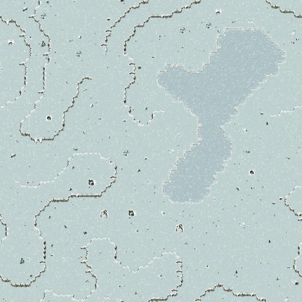

Abigan

Map
Terrain preview of the planet's map (retail .MP file), one tile = a few pixels.
- Map size
- 128 x 128 tiles
Landing spot (4) Ore deposit (48)

Related
- Requires
- Kariotyp
- Unlocks
- Centaur, Centurion, Aiatus
- Star system
- Nortus System
Config values not shown in game (13)
MAP- 207_lodo.mp
COORDINATE_X- 389
COORDINATE_Y- 845
ASTEROIDS- 10
ENEMY- 1
TURN_SPEED- 130
X1- 10
Y1- 10
X2- 40
Y2- 40
SOURCE_MUL- 10, 10, 10, 10
SOURCE_ADD- 0, 0, 0, 0
BANK- 0, 1, 2, 3, 4, 5, 6, 7, 8, 9, 10, 11, 12, 13, 14, 15, 16, 17, 18, 19, 20, 21, 22, 23, 24, 25, 26, 27, 28, 29, 30, 31, 32, 33, 34, 35, 36, 37, 38, 39, 40, 41, 42, 43, 44, 45, 46, 47, 48, 49, 53